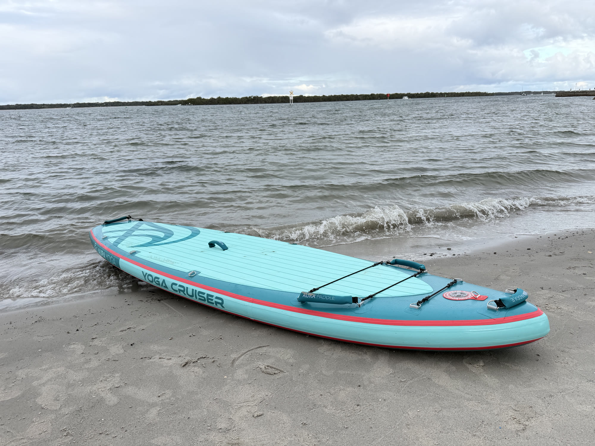
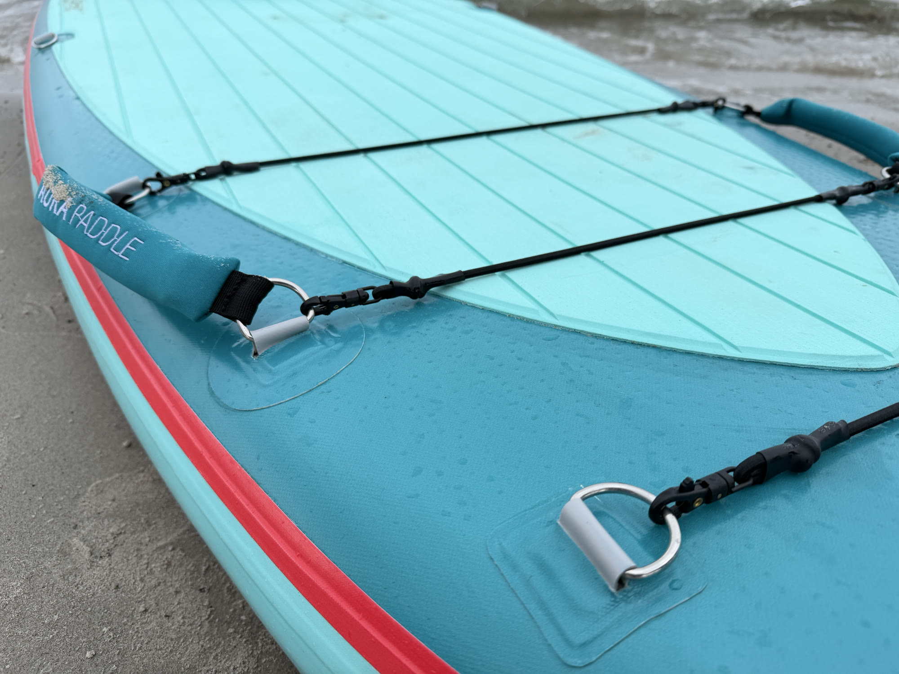
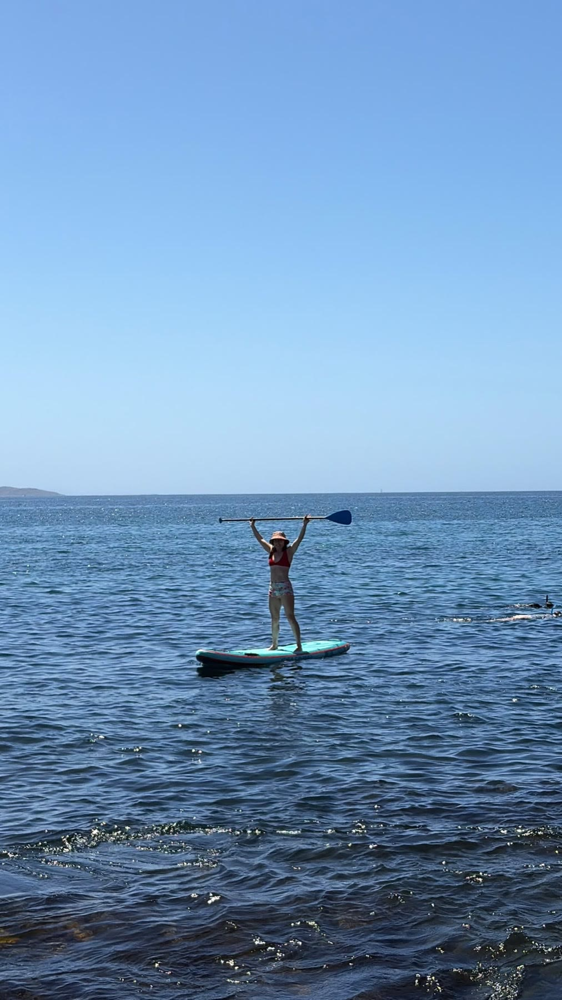

Best for
SUP yoga, paddlers who value generous deck space, relaxed family outings where people take turns, and easy-paced cruising.
Yoga Cruiser Series
A spacious yoga SUP board for gentle movement, relaxed cruising and unhurried days on the water. Its 36-inch-wide deck — about 91 cm — gives you usable room to change position and reset your stance. All board materials are UV-resistant — designed for Australian conditions; accessories are excluded.
Glacier Blue in stock · Pay in full at checkout · Dispatch within 1 business day after payment
Size — 11'0"
Colour — Glacier Blue
Paddle Board Launch Batch 01
Paid pre-orders for Yoga Cruiser pre-order colours, Angler Fishing and Touring Performance are combined. Production starts when this shared batch reaches 50 boards, regardless of the selected model or colour. If the target is not reached by the closing date, all affected orders will be cancelled and fully refunded to their original payment method.
Quantity
| Length | 11'0" |
| Width | 36" |
| Thickness | 6" |
| Volume | 285 L |
| Maximum capacity | 180 kg |
| Construction | Woven drop stitch with dual-layer PVC |
| Board materials | All board materials are UV-resistant — designed for Australian conditions. Accessories are excluded. Avoid prolonged sun and heat; follow inflation, cleaning, drying and storage guidance. |
| Approx. board weight | 11 kg |
| Approx. complete package weight | 17 kg |
| Packed bag dimensions | 100 × 45 × 28 cm |
Product guidance
SUP yoga, paddlers who value generous deck space, relaxed family outings where people take turns, and easy-paced cruising.
Choose another board if outright touring speed, a narrow race-style feel or dedicated fishing mounts matter more than deck space and stability.
The 36-inch platform and 285-litre volume create a broad, usable deck for movement, balance and easy-paced paddling.
36-inch wide inflatable SUP
At 36 inches wide, Yoga Cruiser measures 91.44 cm across its published width — about 91 cm. That broad platform is designed around yoga, gentle movement and relaxed cruising, rather than distance-focused speed.
Compare that with the 10'6" × 33" CoastGo if you want a more compact all-round format with a carry bag and hand pump. Width is only one part of fit: consider your reach, total load, launch route and the water you expect to paddle.
For family outings, sharing a board in turns is different from paddling together. If several people want to be on the water at the same time, plan a suitable board and safety equipment for each paddler. Spare capacity does not make a board approved for tandem use.



Real board · closer look
The real full-board view shows the padded movement area, handles and cargo zone together. The detail view makes the raised fittings easier to identify before choosing where to place hands, knees or equipment.
Use the published specifications for dimensions and maximum capacity; photographs do not establish performance or recommended rider weight.
Real use · Yoga Cruiser
These customer-supplied photographs show the Glacier Blue Yoga Cruiser being carried and used outdoors. They are real-use context, not a stability or load test.
Content courtesy of flowMOcean.

Silent field clip
This 13-second clip shows the Yoga Cruiser being paddled standing on coastal water. It is presented without sound and plays only when selected.
Content courtesy of flowMOcean.
Customer reviews
Reviews are checked before publication so product feedback stays useful, relevant and respectful.
The Aura Paddle Yoga iSUP is an absolute game-changer for anyone looking for maximum stability and family fun on the water. Here is why this inflatable stand-up paddleboard stands out:
• Unmatched Stability: The board is super stable, making it incredibly easy to balance. Whether you are holding complex yoga poses or navigating choppy water, it feels rock-solid underfoot.
• Perfectly Family Friendly: Thanks to its generous width and weight capacity, it easily fits multiple kids or a family pet onboard without tipping. It has quickly become our go-to board for family weekend adventures.
• Premium Build & Comfort: The deck pad is incredibly soft and grippy, which is perfect for extended yoga sessions or when the kids are sitting down catching rides.
• Easy Setup: It inflates quickly, feels as rigid as a hardboard once at full PSI, and packs down effortlessly into its carry bag. Highly recommended.
Keep exploring